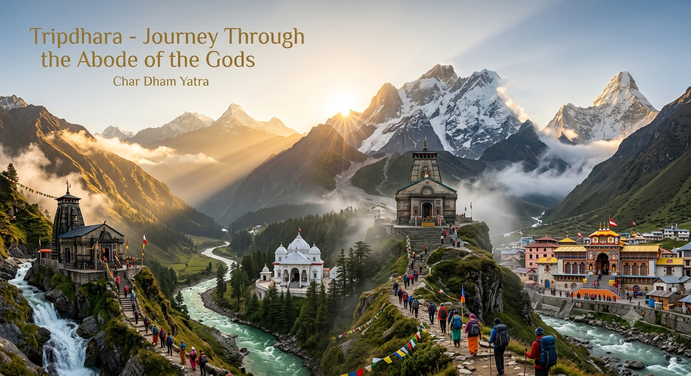
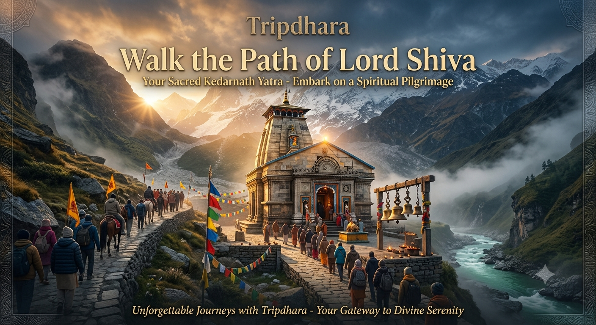
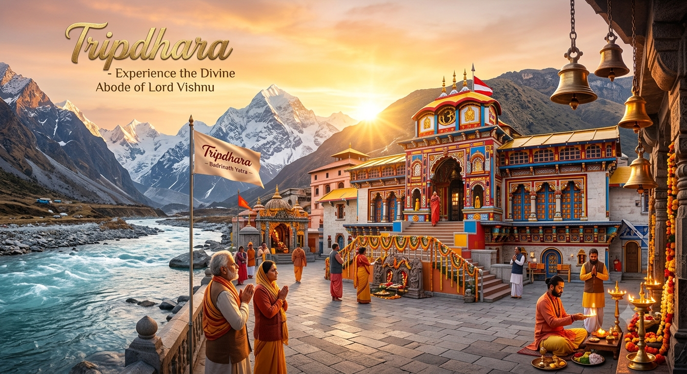
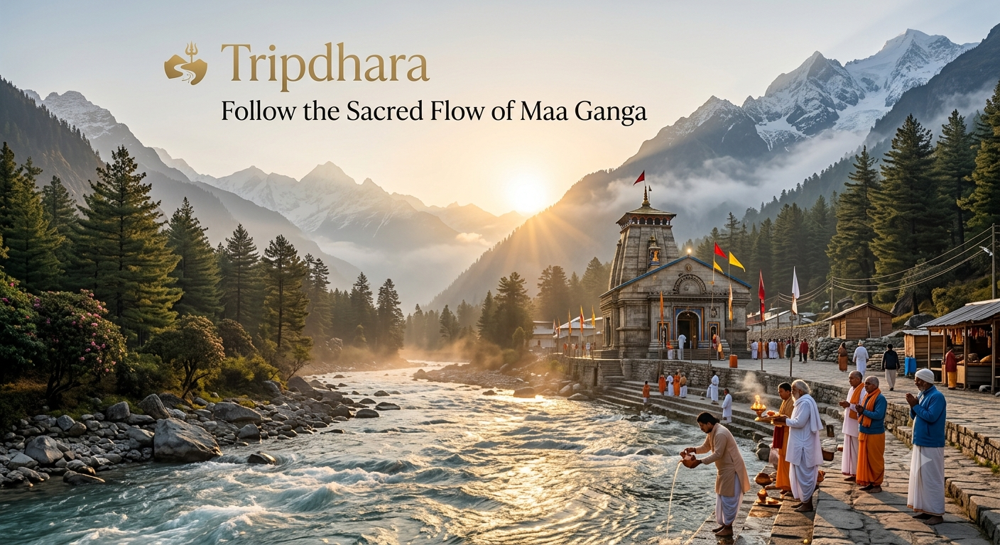
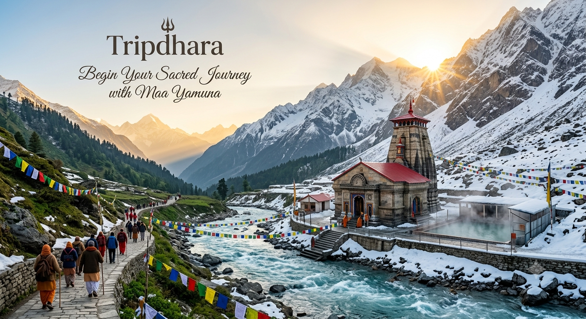
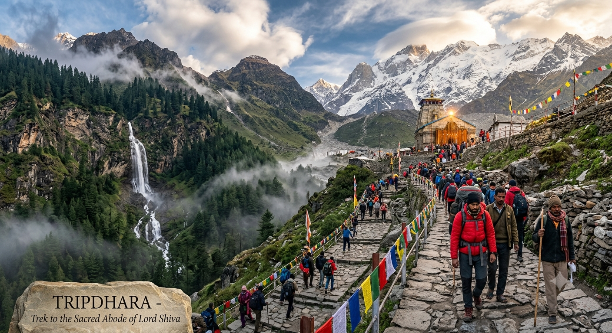
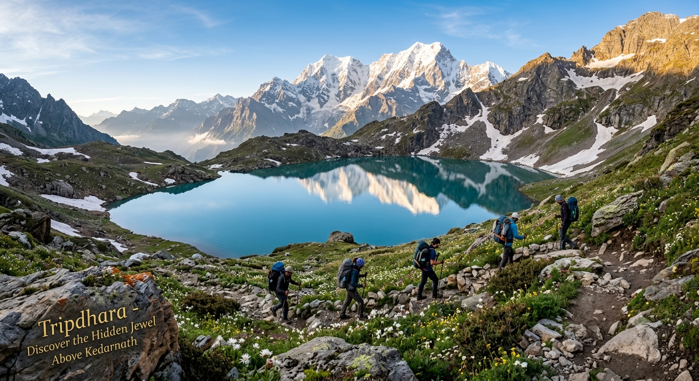
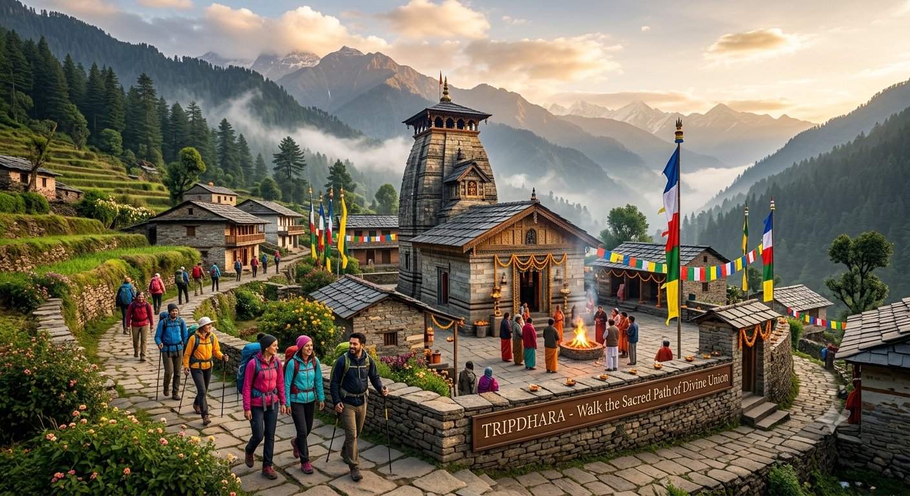

The Char Dham Yatra is one of the most sacred Hindu pilgrimages, taking you to the four holy Himalayan shrines: Yamunotri, Gangotri, Kedarnath, and Badrinath.
Completing this Yatra is believed to wash away sins and help achieve Moksha. Each temple represents a unique spiritual energy—from Shiva's raw power at Kedarnath to Vishnu's peaceful benevolence at Badrinath.

Journey to the seat of Lord Shiva. Located at an altitude of 3,584 meters near the Mandakini River, Kedarnath is the most famous of the Panch Kedar shrines.
The ancient stone temple is an architectural marvel that stood resilient against the 2013 floods, protected by a massive boulder (Bheem Shila) that rolled behind it.

Visit the holy abode of Lord Vishnu. Situated along the banks of the Alaknanda River at an altitude of 3,133 meters, Badrinath is easily accessible by road, making it highly comfortable for family pilgrimages.

Journey to the source of the holy river Ganga. Located at 3,100 meters, the white granite temple stands amidst cedar forests and snow-capped peaks in the Bhagirathi valley.
The temple is dedicated to Goddess Ganga, marking the spot where the river descended to earth from Lord Shiva's locks to wash away the sins of King Bhagirath's ancestors.

The first stop of the Chardham pilgrimage. Tucked away in a narrow gorge of the Bandarpoonch peaks, Yamunotri is the birthplace of the Yamuna River.
Dedicated to Goddess Yamuna, daughter of the Sun God. A holy dip in the Yamuna is believed to protect pilgrims from untimely death.

A challenging yet spiritually rewarding walk. The 16km trail from Gaurikund to Kedarnath takes you through cascading waterfalls, mountain streams, and steep winding stone paths.

For seasoned adventurers, this trek extends beyond the Kedarnath temple to a high-altitude glacial lake at 4,135 meters.
Walk through gravel moraines, Chaturangi glacier fields, and witness the towering Chaukhamba peaks reflection in the clear blue waters where the sacred Brahma Kamal flower blooms.

Walk through quiet pine forests and Garhwali villages to the ancient temple where Lord Shiva and Goddess Parvati were married in the presence of Lord Brahma.
The temple houses a perpetual fire flame (Akhand Dhuni) that has been burning since the marriage in Satya Yuga.
